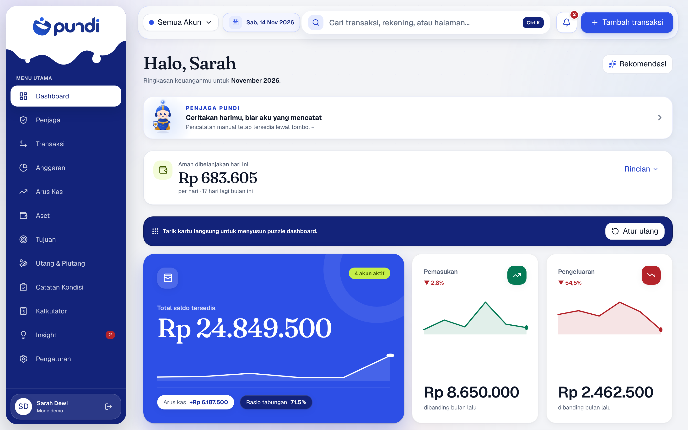
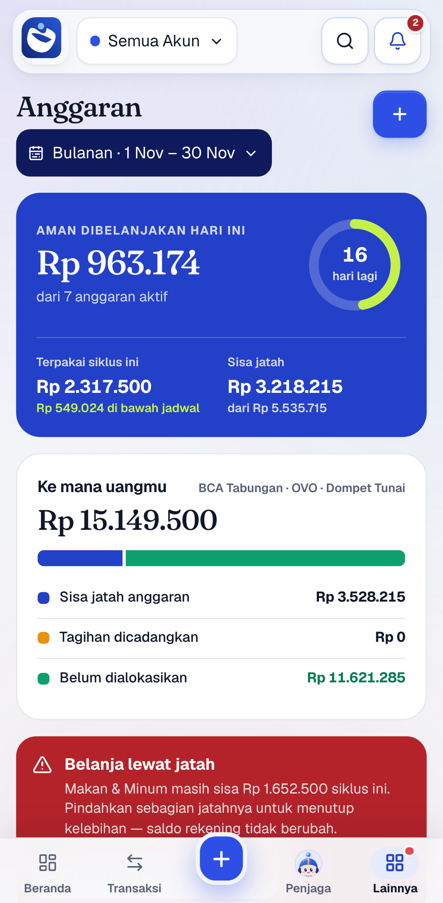
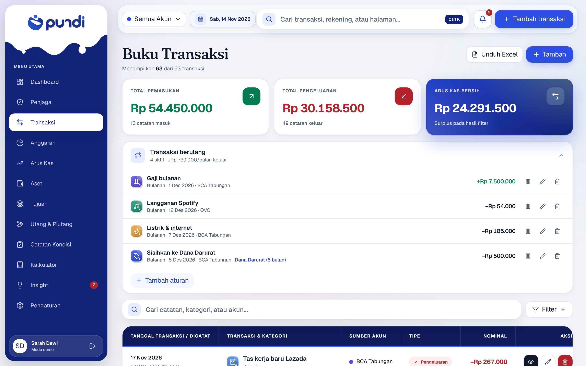
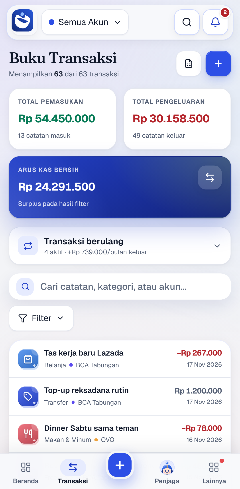
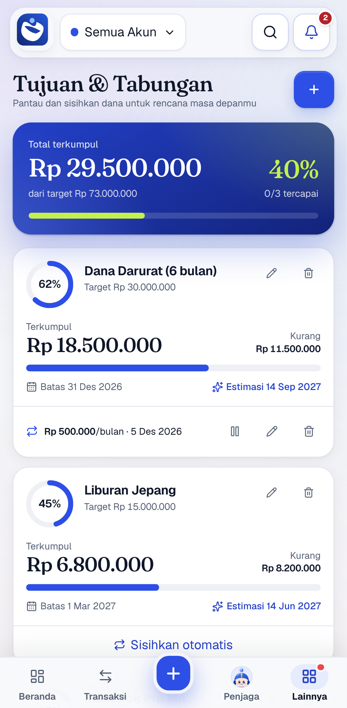
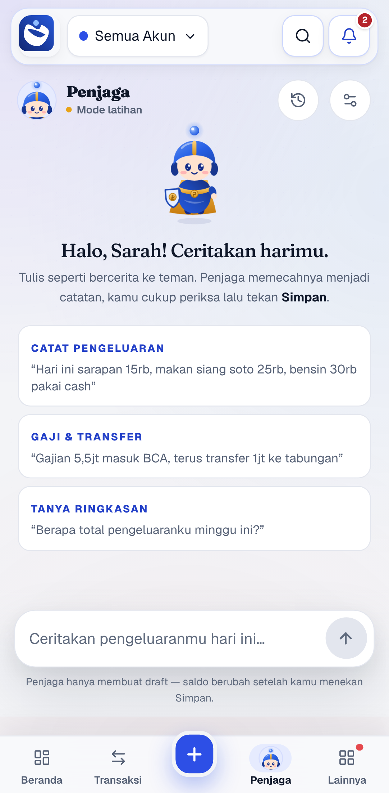
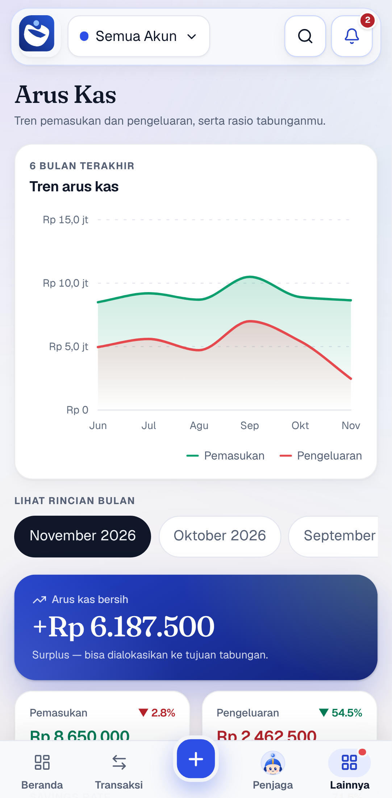
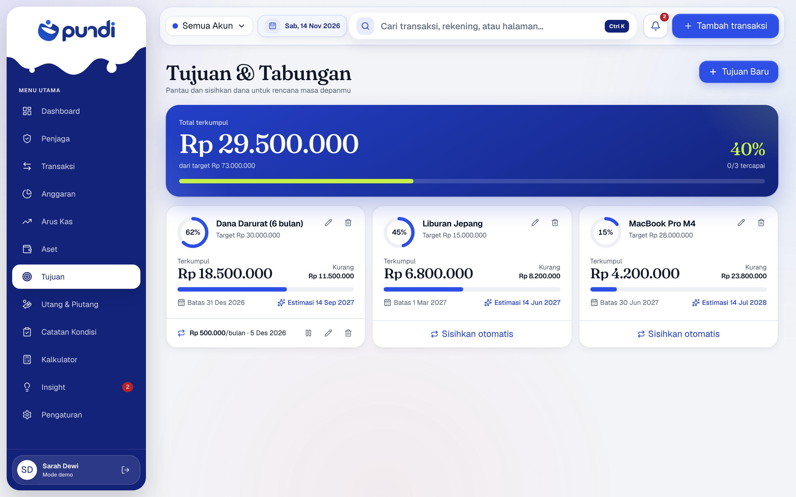
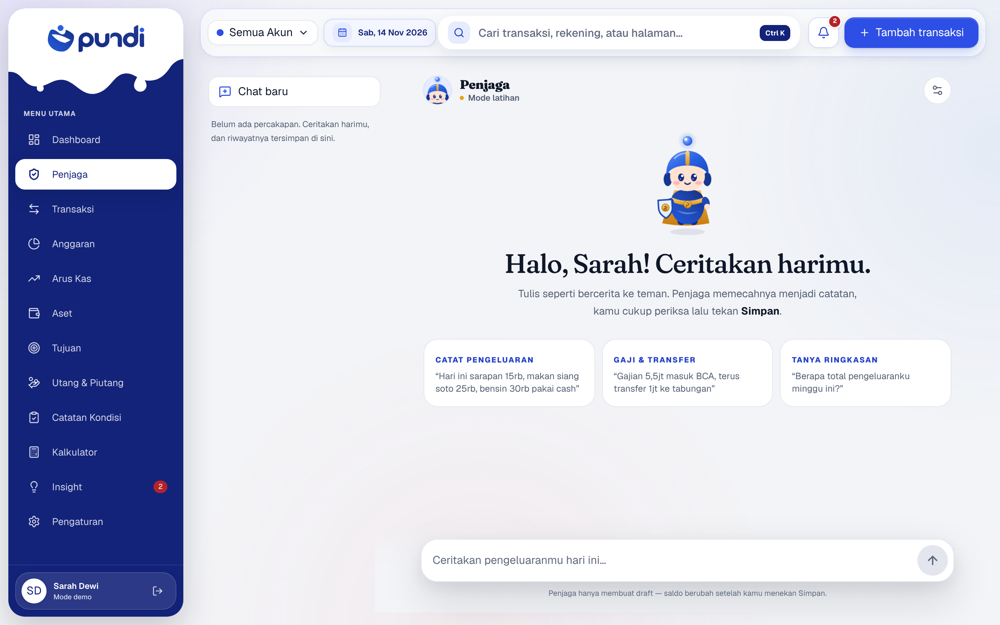

Satu sistem,
dua layar.
Cetak biru tampilan Pundi: halaman yang paling sering dibuka, dirancang sekali lalu disesuaikan untuk web 1440 px dan ponsel 412 px. Navigasi samping di web, navigasi bawah dengan tombol tambah di tengah di ponsel.
Alur utama
Dari masuk sampai mencatat dalam tiga ketukan. Garis hijau = halaman di lembar ini.
Dashboard
/dashboardSatu pertanyaan dijawab paling dulu: berapa yang aman dibelanjakan hari ini? Saldo, tren, dan asisten menyusul di bawahnya.
- 1Bilah atas globalPilih akun, tanggal, cari (Ctrl K), dan tombol tambah transaksi selalu di tempat yang sama.
- 2Ajakan PenjagaPintu masuk tercepat untuk mencatat: cukup ceritakan belanjamu.
- 3Aman dibelanjakanAngka per hari dari sisa anggaran siklus, dengan rincian bisa dibuka.
- 4Kartu saldo kobaltSatu-satunya permukaan solid besar; lime hanya untuk penanda.
- 5Navigasi bawah + FABDi ponsel, tambah transaksi ada di tengah, terjangkau ibu jari.

1234 245
245Anggaran
/anggaran · /anggaran/[id]Anggaran mengikuti siklus gajian, bukan kalender. Setiap angka bisa dijelaskan dan setiap kelebihan bisa ditutup dari anggaran lain.
- 1Pemilih siklusBulanan atau mulai tanggal gajian; lanjut otomatis tiap bulan.
- 2Cincin hari tersisaSatu angka besar + progres siklus, tanpa grafik berlebihan.
- 3Ke mana uangmuSumber dana dibagi: sisa jatah, tagihan, belum dialokasikan.
- 4Banner lewat jatahMasalah + solusi dalam satu tombol: "Tutup dari Makan & Minum".
- 5Detail & grafik harianBatang 14 hari dengan garis jatah; merah hanya saat lewat.
 1234
1234
1234 5
5Transaksi
/transaksiBuku transaksi yang bisa dibaca sekilas: total di atas, aturan berulang terlipat, lalu daftar yang bisa dicari dan difilter.
- 1Tiga angka ringkasPemasukan hijau, pengeluaran merah, arus kas bersih di kartu kobalt.
- 2Transaksi berulangGaji, langganan, tagihan; dibuat sekali, tercatat otomatis.
- 3Cari & filterSatu kolom pencarian untuk catatan, kategori, dan akun.
- 4Tabel → kartuKolom tabel di web berubah jadi baris kartu di ponsel.

1234
134Tujuan, Penjaga & Arus Kas
/tujuan · /penjaga · /arus-kasPola yang sama dipakai ulang: kartu ringkasan kobalt di atas, isi di bawahnya, aksi utama di pojok kanan atas.
- 1Tujuan tabunganPersentase dalam cincin, estimasi tanggal tercapai, sisihkan otomatis.
- 2PenjagaCeritakan belanja dengan kalimat biasa; asisten menyusun draft untuk disetujui.
- 3Arus kasTren 6 bulan, lalu pilih bulan untuk rinciannya.

1
2
3

Sistem desain
Token yang sama dipakai di web dan mobile, langsung dari styles/tokens.css.
Warna
Mint & ember hanya untuk makna (aman / lewat). Lime dipakai hemat sebagai sorotan di atas latar gelap.